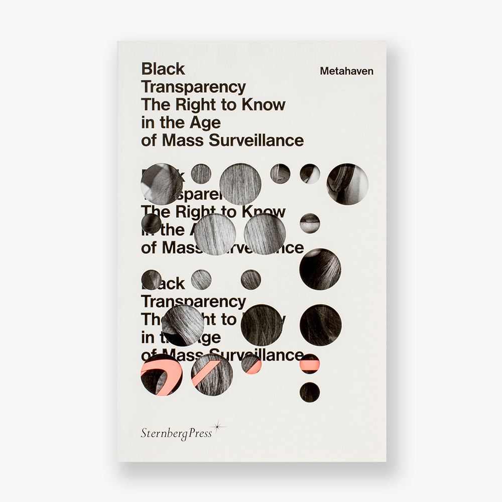

Metahaven and the New York Times' Privacy Project acted as a primary source of inspiration and motivation for this project, as well as authors such as Douglas Coupland, Mark Kingwell, Shuman Bashar, and publications by Strelka Press and Sternberg Press.

You can view the complete list
of sources used in the publication here.